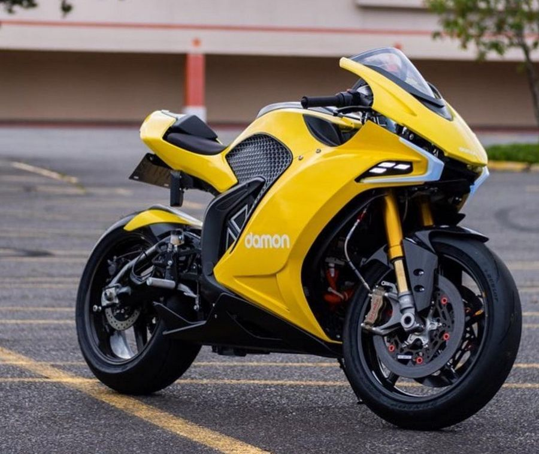

7 лучших электрических мотоциклов 2022 года
Не будет новостью для вас, что гоночные байки проектируются с уклоном в сторону высокой скорости. Но все же основная задача обычного мотоцикла состоит в обеспечении безопасности на дороге.В виртуальном мире довольно легко маневрировать на скоростных байках по улицам, но мы все же не живем в выдуманной реальности. К счастью, развитие технологий позволило свести воедино функции безопасности, технологии подсказывающие водителю и реальную надежность в самых лучших электрических мотоциклах. Они гарантируют безопасность путешествия на электрическом мотоцикле по городским улицам, и при этом все совершенно законно. Вы в нужном место, если ищете лучшие электромотоциклы, с определенными характеристиками. Продолжайте читать, чтобы узнать, какой из них лучше всех вам подойдет. Индустрия электрических мотоциклов развивается семимильными шагами, и несколько громких имен все чаще выпускают новые модели. Улучшения в предыдущих версиях сделали езду более плавной. С одной стороны, это хорошо, с другой – оставляет любителей, гонщиков и потенциальных будущих владельцев в некотором замешательстве. Какой электрический мотоцикл выбрать? Какая модель самая лучшая? Чтобы помочь вам ответить на этот вопрос, мы составили список из 7 лучших электромотоциклов для мужчин, желающих свою страсть езды на байках вывести на новый уровень.
Damon Hypersport Premier

Damon Hypersport Premier от Damon может похвастаться мощностью 200 лошадиных сил и разгоняться до 100 километров в час менее чем за 3 секунды. С таким напором мощности неудивительно, что он способен развивать молниеносную скорость 320 км в час. Damon Hypersport Premier оснащен мощной батареей 21,5 кВтч, заряжаемой менее чем за 3 часа с помощью двухуровневого зарядного устройства и обеспечивающей дальность действия до 300 километров, независимо от того, путешествуете ли вы по городским улицам или шоссе.
Мотоциклы Damon Motorcycles могут не только забирать энергию из сети, но могут и отдавать её, при необходимости. Они снабжены системой V2H.
Что такое V2H? Это система, позволяющая владельцу электромотоцикла не только заряжать свой Hypersport от домашней розетки (в условиях загородного дома или дачи, конечно), но также она позволяет использовать его аккумулятор в качестве резервного источника питания. Зарядное устройство, которым снабжён электробайк, является двунаправленным, поэтому оно может передавать питание от электрической розетки на байк или обратно, при необходимости. А такая необходимость случается довольно часто при отключении электроснабжения в деревнях и посёлках. И вот тут полностью заряженной батареи на 21 кВт*ч может вполне хватить минимум на пару суток, при среднем энергопотреблении.
- Максимальная скорость: 320 км/ч
- Расстояние: до 300+ километров
- Емкость аккумулятора: 21,5 кВтч
- Вес: 200 кг
Brutus V9
Brutus V9 возможно не обладает молниеносной скоростью некоторых моделей, но он определенно лучший электрический мотоцикл, если говорить о дальности пробега. Этот зверь способен проехать до 450 километров без подзарядки – это максимальное расстояние, которое может пройти любой электрический мотоцикл, по крайней мере, на сегодня. И делает это без громкого рычания выхлопной трубы. Впечатляющий результат, учитывая, что ему приходится тащить свой ошеломляющий вес в 355 килограмм каждый километр. Brutus V9 возможно не обладает молниеносной скоростью некоторых моделей, но он определенно лучший электрический мотоцикл, если говорить о дальности пробега. Этот зверь способен проехать до 450 километров без подзарядки – это максимальное расстояние, которое может пройти любой электрический мотоцикл, по крайней мере, на сегодня. И делает это без громкого рычания выхлопной трубы. Впечатляющий результат, учитывая, что ему приходится тащить свой ошеломляющий вес в 355 килограмм каждый километр.
Необычный и прикольный мот для электричек. Внешне старый, по начинке новый. Эклектика. Все как я люблю. 125 сил, 190 ньютон метров моменту, почти четыреста километров автономности, 33,7 квт час батарейка, половина от тесловской и триста пятьдесят кило весу. При всем при том не сильно дорого для такого мотика. 26 999 долларов. Вот такой бы я может и купил. Хотя как и у всего мелкосерийного, есть проблемы с дальнейшим обслуживанием.
- Максимальная скорость: 185 км/ч
- Расстояние: до 450 километров
- Емкость аккумулятора: 18,8 кВтч;
- Вес: 355 кг
Harley-Davidson LiveWire
Любите ли вы байкерские татуировки Харлей Дэвидсон или нет, в электрическом мотоцикле LiveWire определенно есть что-то притягивающее. Эта словно вырезанная из цельного куска металла машина не только красивая с виду. Помимо элегантного современного дизайна, байк может похвастаться мощной батареей 15,5 кВтч. Созданный для гонщиков, нуждающихся в мгновенном ускорении, модель разгоняется до 100 км/ч с нуля всего за 3 секунды. Неудивительно, что хорошие парни из Harley Davidson характеризуют его как «разряд молнии, способный заменить городскую сеть». Livewire поставляется со встроенным зарядным устройством 1 уровня и шнуром питания, восстанавливающие жизнь байка. Электрический мотоцикл предлагает три настраиваемых режима езды в дополнение к четырем предварительно запрограммированным, включая дорогу, спорт, дождь и расстояние пробега. Вы можете проехать до 240 километров всего за одну зарядку.
Чем же так привлекает Harley Davidson LiveWire? Во-первых, это неповторимый стиль. И по этому показателю ему нет равных среди электромотоциклов других брендов. Он является чем-то большим, чем мотоцикл. Livewire настолько красив, что невозможно оторвать взгляд.
- Максимальная скорость: 150 км/ч
- Расстояние: до 240 километров
- Емкость аккумулятора: 15,5 кВтч
- Вес: 250 кг
Energica Ego
Некоторые электрические мотоциклы созданы быть соблазнительными и сексуальными. Показательный пример: Energica Ego. Но этот байк – это не только эстетика. Он также мощная машина с приличной максимальной скоростью 240 километров в час. Как и LiveWire, этот дикий зверь способен разогнаться с 0 до 100 км/ч всего за 3 секунды. Базовая модель поставляется с быстро заряжающимся аккумулятором емкостью 13,4 кВтч. Вы сможете путешествовать по городу на расстояние до 190 км без подзарядки. Как и другие современные электрические мотоциклы, модель оснащена расширенными функциями, включая возможность подключения по Bluetooth.
Разработчик ENERGICA EGO предпочел традиционным кривым поверхностям плоские с множеством острых углов, отчего его внешность стала более современной и привлекающей к себе внимание. Итальянцы отличались всегда харизмой, поэтому выпущенный ими электромотоцикл не мог иметь менее экстравагантного вида. Он внешне выглядит агрессивным и «злым»: особенно запоминается его острый как у совы «клюв».
- Максимальная скорость: 240 км/ч
- Расстояние: до 190 километров
- Емкость аккумулятора: 13,4 кВтч
- Вес: 265 кг
Lightning LS-218
Lightning LS-218, без сомнений самым быстрый в мире электрический мотоцикл на сегодня и вполне по доступным ценам. Он способен развить ошеломляющую скорость в 350 километров в час, наделен переключением передач и ревом двигателя – он буквально не имеет себе равных в мире электрических мотоциклов. В довершение всего, он разгоняется с 0 до 100 км в час всего за 2,2 секунды, обеспечивая водителю мгновенную мощность. Модель оснащена аккумулятором на 12 кВтч, заряжающимся за 30 минут на быстром зарядном устройстве постоянного тока или за 2 часа на зарядном устройстве второго уровня. Если вы когда-либо сомневались в возможностях электрических мотоциклов, Lightning LS-218 развеет все сомнения.
- Максимальная скорость: 350 км/ч
- Расстояние: до 190 километров
- Емкость аккумулятора: 12 кВтч
- Вес: 225 кг
Johammer J1.200
Будущее наступило, и Johammer J1.200 служит доказательством. Футуристический электрический мотоцикл создан по-настоящему уникальным с нуля и обеспечивает впечатляющие характеристики. Благодаря нетрадиционному дизайну он признан лучшим электромотоциклом. Как вы уже догадались, скромный байк легкий и способен преодолеть расстояние в 200 километров после полной зарядки. Johammer интегрировал дисплеи с высоким разрешением в зеркала заднего вида, позволяющие сразу видеть обороты, предупреждения, скорость и другую информацию. Модель в любой день и в любое время непременно привлечет внимание.
- Максимальная скорость: 120 км/ч
- Расстояние: до 195 километров
- Емкость аккумулятора: 12,7 кВтч
- Вес: 177 кг
Zero SR

Zero SR пример того, что изначально означает уличная езда. Его спортивная эргономика и четкие линии достойны зависти. Ускорение на любых оборотах и внушительная конструкция способны превратить вашу ежедневную поездку в захватывающее дух событие. Этот электрический мотоцикл развивает максимальную скорость 165 километров в час и доставит вас намного раньше, чем потребуется очередная подзарядка. Аккумулятор обеспечивает расстояние до 288 километров от одной зарядки. Но если вам этого недостаточно, доступны обновления.
- Максимальная скорость: 165 км/ч
- Расстояние: до 288 километров
- Емкость аккумулятора: 14,4 кВтч
- Вес: 188 кг
С SR/F было принято решение взять все, что они узнали с первыми двумя поколениями, и начать с чистого листа. Ашкенази подводит итог: “В этот раз мы получили все с самого начала: промышленный дизайн, машиностроение, энергетика, электротехника. Когда мы начинали этот проект, все было под рукой, не было ограничений. Как ты этим воспользуешься?” Когда пыль улеглась единственными частями байка, оставшимися от предыдущего поколения оказались: подножки, зеркала, поворотники, электронный дроссель, ручки, грузики руля, датчики скорости колеса и магниты, звуковой сигнал, отражатели и подножка.
В результате 2019 Zero SR/F — это мотоцикл, который выглядит, на мой взгляд, более похожим на полноразмерный мотоцикл, чем любой другой предыдущий.
Заключение
Сегодня производители предлагают покупателям две разновидности мотоциклов оборудованных электродвижками: для взрослых и для подростков. Последние представлены не очень широким ассортиментом. В основном это спортивные вариации предназначение которых тренировки и любительские покатушки за городом.
Аппараты для взрослых имеют уже более солидные технические показатели, которые практически не уступают мотоциклам с ДВС, а иногда и превосходят их.
При выборе мотоцикла на электрической тяге, люди обращают внимание на запас хода на одном заряде и чем больше километров можно накрутить, тем лучше. Второй важный момент — сколько времени затрачивается на полную зарядку аккумулятора. При таких требованиях хорошо бы предпочесть аппараты с мощным мотором и быстрой подзарядкой, но к сожалению есть одна печальная новость — их себестоимость очень высока. Ниже приведён перечень других факторов влияющих на предпочтения при выборе:
широкий функционал
качество сборки и материал из которого изготовлена основа: самые крепкие, стальные структуры
стильный внешний вид
соотношение цена/качество
Что касается бренда, то нельзя дать однозначный ответ, какой самый лучшийЕсли покупка совершается впервые, то особо и сравнить не с чем, остаётся только штудировать отзывы в интернете и верить повествованиям продавца.
Безусловно, выбор между мотоциклом с ДВС и аппаратом на электротяге остаётся только за вами. Конечно, электротранспорт по причине дороговизны аккумуляторных батарей ещё не набрал тотальной популярности, однако производители упорно работают над данной проблемой и несомненно, у электромотоциклов впереди шикарное будущее.